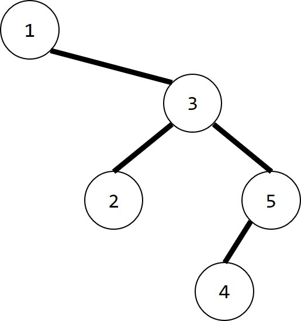

搜索解答
目前已完成到 3.2
3.2.5
上次更新：2022-02-18
发现了题解错误/代码缺陷/排版问题？请点这里：如何：提交反馈 。
解答
事实上，这个问题可以归结为，如何根据频率来构造一棵最优的BST？ 如果知道树的形状，逆推插入顺序也就不难了（先序遍历）。
首先我们定义某个结点的查找开销为该结点的深度加一乘以频率， （注意根结点的深度为 0，树的高度等于整棵树中最大的深度值） 所有结点的查找开销加起来就是一整棵树的查找开销了。 cost(n)=\sum_{i=0}^{n} (depth(i)+1) \times frequency(i) 对于固定的一组键值和频率，cost 最小的树即为我们要找的树。 这样的树被称为最优化二叉树，或者 Optimal BST。
根据二叉树的性质，我们可以将 cost 的表达式变为： cost(n)=cost(left)+cost(right)+\sum_{i=1}^{n} frequency(i) 即左子树的开销和右子树的开销相加，再加上所有结点的频率之和。 （左子树和右子树开销计算时每个结点的深度都少了1，因此要加上频率和） 不难得到结论，Optimal BST 的所有子树也都是 Optimal BST。
我们可以利用一种类似于构造哈夫曼树的方法构造 Optimal BST， 哈夫曼树中比较的是频率，而构造 Optimal BST 时比较的则是开销。 由于二叉查找树是有序的，因此我们先对序列排序。 然后计算所有大小为 1 的子树开销，显然就等于各个节点的频率。 再计算大小为 2 的子树，注意这里只能按顺序取结点，不能跳着取（例如取第一个和第三个结点）， 每种结点取法都对应有两种根结点选择，计算出最小的开销并记录。 以此类推，直到计算到大小为 n 的树，此时整棵 BST 就被构造出来了。
举个例子，例如给出键值和频率如下表所示：
\begin{array}{l|lllll} key & 1 & 2 & 3 & 4 & 5 \\ \hline p & 0.4 & 0.1 & 0.2 & 0.1 & 0.2 \end{array}
当 s=1 时，各子树的开销如下表（根结点不唯一）：
\begin{array}{l|lllll} subtree & [1,1] & [2,2] & [3,3] & [4,4] & [5,5] \\ \hline cost & 0.4 & 0.1 & 0.2 & 0.1 & 0.2 \\ root & 1 & 2 & 3 & 4 & 5 \end{array}
当 s=2 时，各个子树的开销如下（根结点不唯一）：
\begin{array}{l|cccc} subtree & [1,2] & [2,3] & [3,4] & [4,5] \\ \hline cost & \min \begin{cases} 0+[2,2]+0.5, \\\ [1,1]+0+0.5 \end{cases} =0.6 & \min \begin{cases} 0+[3,3]+0.3, \\ [2,2]+0+0.3 \end{cases} =0.4 & \min \begin{cases} 0+[4,4]+0.3, \\ [3,3]+0+0.3 \end{cases} =0.4 & \min \begin{cases} 0 +[5,5]+0.3, \\ [4,4]+0+0.3 \end{cases} =0.4 \\ root & 1 & 3 & 3 & 5 \end{array}
当 s=3 时，各个子树的开销如下表（根结点不唯一）：
\begin{array}{l|ccc} subtree & [1,3] & [2,4] & [3,5] \\ \hline cost & \min \begin{cases} 0+[2,3]+0.7, \\ [1,1]+[3,3]+0.7, \\ [1,2]+0+0.7 \end{cases} =1.1 & \min \begin{cases} 0+[3,4]+0.4, \\ [2,2]+[4,4]+0.4, \\ [2,3]+0+0.4 \end{cases} =0.6 & \min \begin{cases} 0+[4,5]+0.5, \\ [3,3]+[5,5]+0.5, \\ [3,4]+0+0.5 \end{cases} =0.9 \\ root & 1 & 3 & 3 \end{array}
当 s=4 时，各个子树的开销如下表（根结点不唯一）：
\begin{array}{l|ll} subtree & [1,1] & [2,2] \\ \hline cost & \min \begin{cases} 0+[2,4]+0.8, \\ [1,1]+[3,4]+0.8, \\ [1,2]+[4,4]+0.8, \\ [1,3]+0+0.8 \end{cases} = 1.4 & \min \begin{cases} 0+[3,5]+0.5, \\ [2,2]+[4,5]+0.5, \\ [2,3]+[5,5]+0.5, \\ [2,4]+0+0.5 \end{cases} = 1.0 \\ root & 1 & 3 \end{array}
当 s=5 时，各个子树的开销如下表（根结点不唯一）：
\begin{array}{l|l} subtree & [1,5] \\ \hline cost & \min \begin{cases} 0+[2,5]+1.0, \\ [1,1]+[3,5]+1.0, \\ [1,2]+[4,5]+1.0, \\ [1,3]+[5,5]+1.0, \\ [1,4]+0+1.0 \end{cases} = 2.0 \\ root & 1 \end{array}
于是最优二叉树为（不唯一）： 